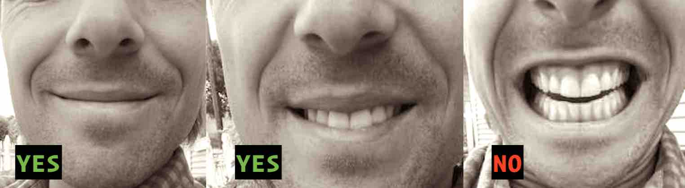
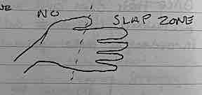

Do a High Five as You Ride Past
How and why to go for the classic, but rare high five as you ride past.
2023-06-18
You’re pedaling along on your bike. A figure enters your viewport ahead. Looks like it’s a jogger, or cyclist heading toward you. In either case, what should you do?
You should do a high five as you ride past.
The high five will be unexpected, which is part of what makes it good. People don’t even realize they want it until it’s happening. Almost every time you go for the high five, you will see their face shift from default to bewilderment and ultimately into delight.
You will know the high five worked because – other than the clapping sound – the target will crack a smile.
If you think about it, a high five makes perfect sense in this scenario. It feels good to be cheered on while exercising, like hearing the cow bell sound near a finish line of a race.
You must do it right. Reach out too early, and they may misinterpret your outstretched arm as a signal to move over. Reach out too late, and they won’t even have a chance to make contact.
BEGIN EXTENSION @ ABOUT 2FT PER 1MPH
────────────────────────────────────
◄─────x
(YOU) 15MPH ~30FT (THEM)
x─────►
────────────────────────────────────The correct timing is meaningless if your face is not right. Your demeanor needs to be inviting, and should clarify to the passerby that, “no, I’m not a creep”. You only have about three to four seconds to sell them on the incoming high five.
You will need to smile, but don’t cheese it so much that you look like a lunatic. Just do your best, soft smile.

If you feel up to it, you can exclaim, “Woo!”, or “Woo-hoo!” as you extend your arm out. Shouting, “Nice job!”, is usually an easy, entry-level way to land a high five. Overall, just try to make it clear that your intent is to do a high five as you pass. Nothing more and nothing less.
The target may initially think you’re waving, and will begin to wave back. Like I said before, a high five is not what’s expected. Do not wave back. Hold strong, and they will get the picture.
Once you see their hand extended outward, you must adjust your course in order to make optimal contact.
Achieving optimal contact is a balancing act. You need to consider how fast you’re approaching, as well as what amount of slap would suit the person best.
In a stationary high five situation, both parties swing their arms, and the palms of the hand make contact. Don’t do that as you ride past. You don’t want to dislodge their arm from the force of the slap as you fly by.
I recommend aiming your hand so that your fingers come into contact with the upper half of their hand. This still gives a slapping sensation, while minimizing the risk of hitting too hard.

Leave a healthy amount of bounce in your arm so that you can absorb the blow, like a shock absorber.
What happens if you miss? This is common, so don’t feel too bad. This is the sort of thing where it is the thought that counts. It’s better to miss than to hit with too much force.
Be prepared for the feeling of rejection that comes when the onlooker chooses not to participate. Some people just aren’t going to do it, and that’s OK. Pretend that you were just stretching your arm, if that makes you feel better.
Additional advice:
- Only slap hands, unless you want to go to jail.
- Only high five someone who is going the opposite direction as you. The physics just don’t work as well otherwise.
- Don’t cross the road to give a high five – it’s safer to wave in that case.
- If there’s a family riding in a Flying-V formation, with the child in front, it’s best not to go for the high five. That kid will probably crash and take the entire family down with them.
- A high five is especially effective on a difficult section of the course, like a hill climb.
You will feel a special bond as your hands clap together with the oncoming stranger. The recipient will be shocked, left with a sense of encouragement, as they continue their activity. You will likely make that stranger’s day without saying a word. You will feel awkward for a few moments, but the feeling of vulnerability will be replaced by a sense of accomplishment.
In a world where we’re lucky to get a nod or a wave, the high five is a lovely surprise.